2.1. Introduction to geodata and layers#
Competences:
In this chapter, you will learn what geodata is, and understand the difference between vector and raster data. Furthermore, this chapter explains the layer concept of GIS-software, which is fundamental to every map you will create.
2.1.1. What is geodata?#
Geodata, geospatial data, or geographic data is data that has geographical information. This means that the data refers to a location, that is defined by coordinates. It is similar to other forms of data that can be represented in tables (such as Excel spreadsheets or CSV files) but each item in the data set also holds coordinate information (see Fig. 2.1). GIS software helps us visualise and manipulate geodata in a 2D (or even 3D) space. There are two primary types of geographic data: vector data and raster data. Both types represent tangible or intangible things in the real world. However, how they store this data is quite different. Because of this, the manipulation and representation of these two types differs dramatically. Understanding the difference between these two types, and how to work with each type on its own, as well as combining both types, will be one of the main skills you will acquire when learning GIS.
{kind=link}
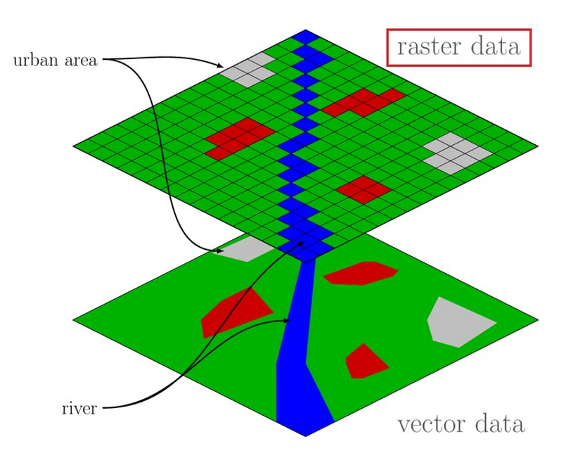
Fig. 2.1 Raster / vector concept (Source: Adapted from WikiMedia).#
{kind=link}
What type of information can be stored in geodata is almost endless. It can hold information about the physical world - such as:
elevation (height) data
environmental data (soils, climate, temperature, rainfall, information about weather events or natural phenomena, such as flooding extent)
data about the infrastructure, buildings, transportation, etc.
sociocultural or economic data - such as demographic data, administrative boundaries, social events, crime, etc.
Geodata usually represents data entries as geometries on a 2D canvas. These geometries can be points, lines, polygons, or even pixels and can represent various objects that exist in the physical world - such as roads, lakes, trees, etc. - or represent intangible objects - such as administrative boundaries, population numbers, health indicators, historical events, etc.
2.1.1.1. Vector data#
Vector data are digital features and they can store geographic/spatial information, as well as other data attributes. As such, they are ideal to visualise information on a map. Each feature can be displayed on a maps using one out of three geometries: points, lines, or polygons (see Fig. 2.2). A layer can only contain features with same type of geometry.

Fig. 2.2 Vector data overview (Source: HeiGIT).#
Point data usually only has one set of coordinates per data entry (longitude, latitude and sometimes elevation, usually referred to as x, y, and z).
Lines are constructed by connecting multiple points which are saved as a single data entry.
Polygons are also constructed by connecting several points, but they form a closed geometry. Each geometry is then represented by a single data entry.
Each feature stores the location (as address or coordinates) and further attributes, e.g. name, ID, or any other sort of information (Fig. 2.3). Which geometry is used depends on the type of data that is represented. For example, a road might be represented by a line, a building footprint might be represented by polygon and a tree might be represented by a point.
{kind=link}
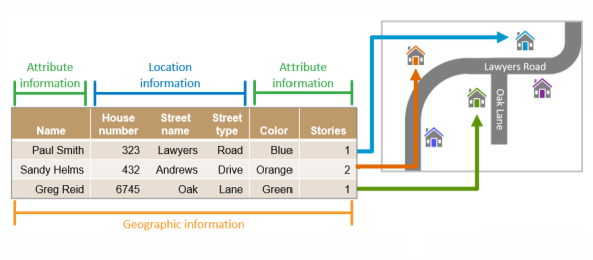
Fig. 2.3 Geographic information can be an address and/or GPS coordinates (Source: British Red Cross).#
Features are displayed on maps with a geometric representation, but they are made of information organized in tables (see Fig. 2.4).
Each row in the table will be one feature on the map, while each column will contain one attribute information (field).
Multiple attributes can be associated to each feature.
{kind=link}
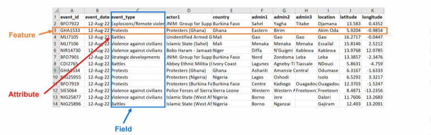
Fig. 2.4 A data table in Microsoft Excel with geographic information. (Source: British Red Cross).#
Fig. 2.5 shows the same dataset displayed both as its geometric representation and as an attribute table.
{kind=link}
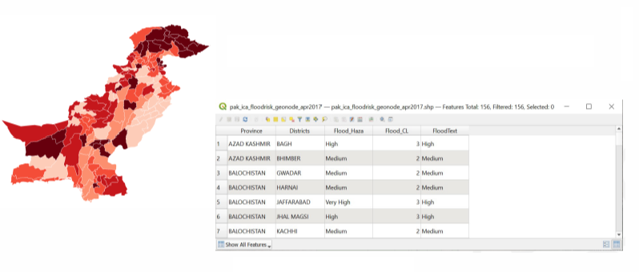
Fig. 2.5 Each polygon on the left represents one row (feature) on the right. (Source: British Red Cross).#
2.1.1.1.1. Vector file formats#
There are several file formats for vector data. They each differ in how the geometries and attributes are stored. However, they still all only contain points, lines, or polygons. Some formats have advantages over others, while others are still used out of convention, although they are outdated. The following table gives a short description of commonly used vector file formats.
Filename extension |
Name |
Description |
|---|---|---|
|
Shapefile |
A shapefile is a vector data file format commonly used for geospatial analysis. Shapefiles store the location, geometry, and attribution of point, line, and polygon features. It’s a common files format used by most GIS software and online mapping platforms. The format is old but still widely used geodata format. One shapefile can only contain one dataset. A complete shapefile has to consist of at least three different files (.shp, .shx, .dbf) |
|
GeoPackage |
The new standard for geodata. GPKG files are an open, portable SQLite-based format for storing vector and raster geospatial data, compatible with various GIS platforms on desktop, web, and mobile. Can contain multiple datafiles (vector, raster and non-spatial data such as tables) |
|
Keyhole Markup Language |
Geodata format for use with Google Earth. KMZ files are compressed versions of KML (Keyhole Markup Language) files used to store geographic data, such as points, paths, and polygons, along with any associated media like images and icons. Commonly used with Google Earth and other mapping software, KMZ files bundle both spatial data and resources in one compact file, making it easy to share interactive maps and visualizations. |
|
GPS Exchange Format |
Geodata format for the exchange of coordinates. For example for waypoints of tracks. |
|
GeoJSON |
Open data format using Javascript Object Notation (JSON) to store geographic data. Can store multiple type of geometries in one file and is widely compatible with web and mobile applications. |
|
Geodatabase |
Designed for efficient data management, spatial analysis, and complex geospatial workflows. Geodatabase files are a proprietary Esri format for storing and managing large volumes of spatial data, including feature classes, tables, and relationships in a structured database. |
Note
The different file formats have different use cases, as well as advantages or shortcomings.
For instance, GeoJSON files cannot store projection info and are conventionally limited to the WGS84 ellipsoid. This makes it difficult to use GeoJSON files in projects where you are using region-specific projections or use projections based on different ellipsoids.
Geodatabase and Geopackage are, unlike the other formats, databases. In GIS, databases store spatial data in structured, scalable systems that support multi-user access, complex queries, and large datasets, making them ideal for enterprise-level analysis and data management. Files, on the other hand, store data in individual, portable formats like Shapefiles, GeoJSON, or GeoPackage, which are easier to share and use offline but lack advanced querying capabilities and scalability.
2.1.1.1.2. Shapefile structure#
A shapefile is a collection of separate files which commonly come in a single folder/directory. Some files are mandatory, others are optional (see Fig. 2.6). In order to have a functioning shapefile, you need to have all the mandatory files in the same folder.
{kind=link}
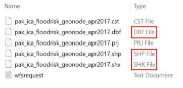
Fig. 2.6 SHP, SHX and DBF are the mandatory files that every shapefile must contain to work properly. The SHP is the main file and contains the geometry.#
2.1.1.2. Raster data#
Another type of geospatial data is raster data. Raster data consists of cells that are organized into a grid with rows and columns, thus forming a raster. Each cell, or pixel, contains a value which holds information (for example, temperature, or population density). Since raster data consists of pixels, aerial photographs or satellite imagery can also be used as raster data, if they have geographical coordinates (see module 3: Georeferencing).
Typical uses for raster data are:
elevation data (often referred to as a digital elevation model or DEM)
precipitation data
interpolated temperature data
population density
The value of each cell is usually visualised by assigning a color to a value. For elevation data, for example, a color ramp is usually used. For categorical data, such as landuse, color categories (such as green = forest; yellow = agricultural landuse, red = residential).
{kind=link}
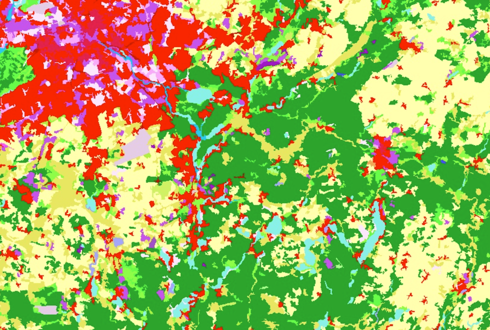
Fig. 2.7 The Copernicus CORINE Landcover Dataset (Source: EEA/Copernicus).#
{kind=link}
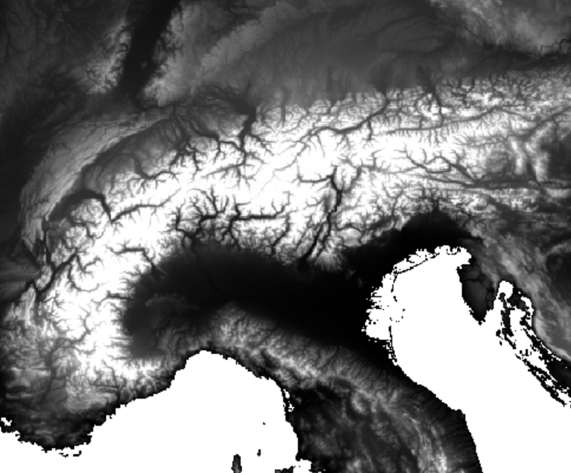
Fig. 2.8 The NASA DEM showing the alps (Source: NASA/USGS/JPL-CALTECH).#
Raster values usually have only one value per cell, however, it can also have multiple (color) bands. Satellite imagery usually offers several bands to represent data collected from different parts of the light spectrum, which we can use to analyze different phenomena, such as the humidity of plants. Multiple bands means that you have more than one value per cell.
The main spatial characteristics are the extent - the area the grid represents in the real world (10km², 100km²) - and the raster resolution - the size of each pixel. In Fig. 2.9, you can see two raster datasets with different resolutions.
{kind=link}
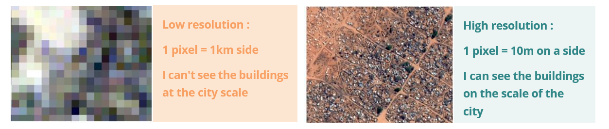
Fig. 2.9 Two raster datasets with different resolution covering the same region. (Source: CartONG).#
In Fig. 2.10 and Fig. 2.11 you can see the same location, on the left as vector data, visualising streets and urban area, and on the right hand as raster data (satellite image), showing the land cover.
{kind=link}
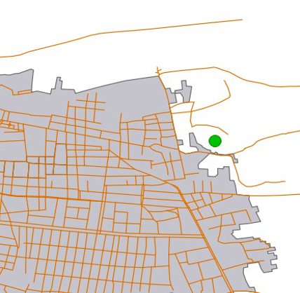
Fig. 2.10 Features represented with vector data. (Source: British Red Cross).#
{kind=link}
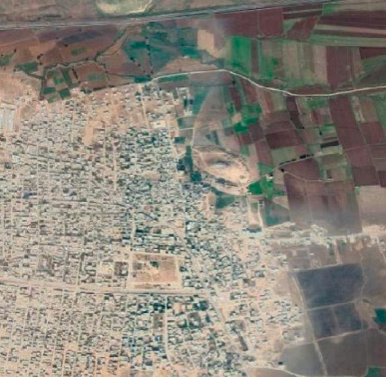
Fig. 2.11 The same location represented as a raster image. (Source: British Red Cross).#
2.1.1.2.1. Raster data formats#
Raster data can have the following data formats:
Filename extension |
Name |
Description |
|---|---|---|
|
Tag Image File Format |
Common raster and image data format. Does not necessarily have georeferenced data. If a |
|
netCDF |
Standard data format for scientific data like speed or temperature. Can be a raster file. Can contain multiple datasets |
|
Esri ASCII Grid files |
Old, simple raster file format, always with georeferenced data |
The advantage of geodatabases
Databases such as Geodatabase (.gdb) or Geopackage (gkpg) can also hold raster layers.
2.1.2. The layer concept#
GIS software helps us visualise geographic data. It does so by displaying the geometries or raster cells on a 2D canvas. However, when creating a map, we are using multiple datasets at once. Every type of geographic data, such as raster data, polygons, points, or lines, is usually stored inside a layer. Each layer consists of geographic objects of the same type (line, polygon, raster, …). GIS software displays these layers on top of each other and let’s you rearrange the order of these layer, in order to create insightful maps (see Fig. 2.12).
By adding different layers, you build your map and can combine information from different sources. With those, you can then perform analyses or adapt the representation by using symbols and colors.
{kind=link}
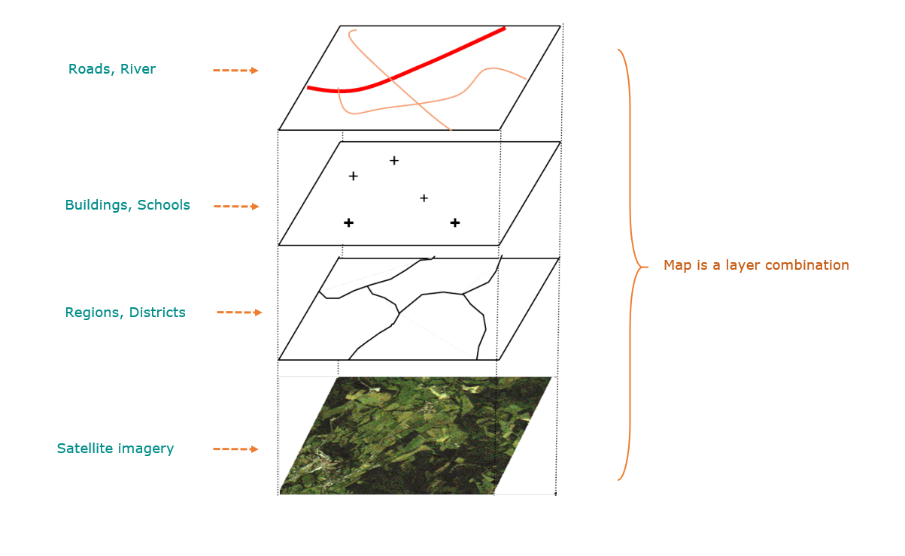
2.1.3. Data import#
Before you can start creating maps in QGIS, you will need to load your data into QGIS. Depending on which file format you want to import, the process differs slightly.
2.1.3.1. Vector data import#
Typical vector data formats are Shapefile (.shp) and GeoPackage (.gpkg).
The process of importing vector data in either of the two formats is the same.
QGIS offers a few ways to load vector data. The most immediate is via drag-and-drop, where you simply
drag the data files you want to add from your file browser into the QGIS window. Another
method is via the “Data Source Manager” (Layer > Data Source Manager). You can also open the Data Source
Manager with the keyboard-shortcut CTRL + L.
Note
GeoPackage files can contain multiple datasets and even whole QGIS projects. When you load a GeoPackage in QGIS, a window will appear where you can select the datasets you want to load.
2.1.3.1.1. Open vector data via the Data Source Manager#
Click on
Layer->Add Layer->Add Vector Layer.... This will open the Data Source Manager.Click on the three points
 and navigate to your
vector file
and navigate to your
vector fileSelect the file and click
Open. More options will appear. In most cases, you can leave these options as they are.Back in QGIS click
Add
Attention
QGIS only lets you import unzipped shapefiles. Make sure to unzip your data files before importing them into QGIS.
Video: Importing vector data via the Data Source Manager
2.1.3.1.2. Open vector data via drag-and-drop#
QGIS lets you open data in your QGIS project by simply dragging the files from your file browser onto your QGIS window. Shapefiles contain only one layer per shapefile, which will be added automatically into you layer panel. Geopackage files (.gpkg) can contain multiple layers in a single file. If you add a geopackage file, a new window will open where you will be prompted to select the layers you want to add to your project.
Video: Importing vector data via drag-and-drop
2.1.3.2. Delimited text import (.csv, .txt)#
In your GIS-career, you will come across geodata in the format of delimited text files, such as .csv files (Comma Separated Values). These files contain tabular data, which can be opened by programs such as Microsoft Excel. They contain geographical or positional information as point coordinates in separated columns (for example, latitude and longitude, or x- and y-coordinates), or as “Well Known Text” (WKT), which represents complex geometries, such as polygons or lines.
2.1.3.2.1. Open Delimited Text Layer#
Tip
To load data from spreadsheets such as Comma Separated Value (.csv) or
Excel (.xlsx), the datasets need to have columns containing geometry - this is
most often in the form of latitude (Y field) and longitude (X field), but might
also be in other formats, such as WKT. In this case, you can also have complex
geometries in your delimited text file.
{kind=link}
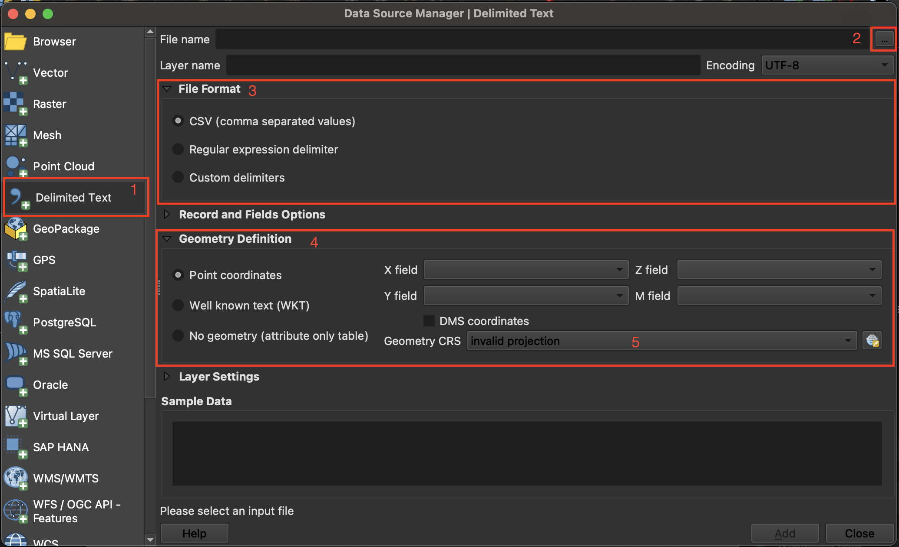
Fig. 2.13 Import delimited text in QGIS 3.36.#
Layer->Add Layer->Open Delimited Text Layer.Click on
File nameclick on the three points and
navigate to your CSV file and click Open.File Format: Here you can specify which delimiter is used in the file you want to import. In a standard CSV file, commas,are used. If this is not the case, selectCustom delimiters. Here you can choose the exact delimiter used in your file.
Tip
To find out which delimiter is used you can open your .csv file in Notepad or Excel. There you can check which delimiter is used to separate the information.

Fig. 2.14 Adjusting the file format parameters while importing a delimited text layer into QGIS.#
Geometry definition: In this section, you specify which columns of the file contain the spatial information to georeference the data on the map. If the file has a column containing latitude and another with longitude data, you can use them to georeferenced the data. CheckPoint Coordinatesif the.csv-file contains point data. Select forX field“LONGITUDE” and forY field“LATITUDE”.Under
Geometry CRSselect the coordinate reference system (CRS). By default, QGIS will select the CRS of the project. If the file does not have spatial information choose the optionNo geometry (attribute only table).Click
Add
Video: Opening delimited text files in QGIS
2.1.3.3. Raster data import#
The import of raster data works in the same way as for vector data. You can either drag-and-drop the raster files onto your QGIS window, or open then through the “Data Source Manager”.
Video: Open raster data via the Data Source Manager
Click on
Layer->Add Layer->Add Raster LayerClick on the three points
and navigate to your
raster fileSelect the file and click
OpenBack in QGIS click
Add
Video: Open raster data via drag-and-drop
2.1.4. Self-Assessment Questions#
Test your knowledge
Check whether you know the key concepts from this chapter by answering the questions below.
Define Geodata. What does it distinguish from regular tabular data?
Answer
Geodata, or spatial data, refers to information that is associated with a specific location on the Earth’s surface. It includes both the geometry (the spatial component) and the attributes (the descriptive data). Unlike regular tabular data, which consists solely of rows and columns without any spatial reference, geodata has a geographic component that allows it to be mapped and analyzed in a spatial context.
What are the two main types of geodata and how do they store information?
Answer
The two main types of geodata are:
Vector Data: Represents geographic features using points, lines, and polygons. Each feature has associated attribute data stored in a table. Common formats include Shapefile (.shp), GeoPackage (.gpkg), and GeoJSON (.geojson).
Raster Data: Represents geographic data as a matrix of cells (pixels), each with a value representing information, such as temperature or elevation. Common formats include GeoTIFF (.tif), JPEG2000 (.jp2), and Esri ASCII Grid (.asc).
Give examples of real‑world phenomena or features that are better represented as vector data vs. raster data.
Answer
Vector Data: Suitable for representing discrete features with well-defined boundaries, such as
Administrative boundaries (countries, districts)
Roads and rivers
Land parcels
Buildings and infrastructure Raster Data: Suitable for continuous data that varies across space, such as
Satellite imagery
Elevation models (e.g, Digital Elevation Models or Terrain models)
Temperature or precipitation maps
Land cover classification
Describe the structure of a shapefile. What mandatory component files must accompany it?
Answer
A Shapefile is a widely used vector data format that consists of at least three mandatory component files:
.shp: Contains the geometry data (points, lines, or polygons)..shx: Contains the shape index data, enabling fast spatial queries..dbf: Contains attribute data in a tabular format, corresponding to each geometry.
It can also contain additional files such as .prj. These files together, which share a name, make up the shapefile
Explain the concept of a “layer” in GIS. Why do GIS systems use layers when building maps?
In GIS, a layer is a collection of geographic data representing a specific type of information, such as roads, rivers, or land use. Layers are stacked on top of each other to create a comprehensive map. Using layers allows for:
Organized data management: Each layer can be edited or analyzed independently.
Clear visualisation: Different types of data can be styled and displayed separately.
Efficient analysis: Layers can be turned on or off to focus on specific aspects of the data.
Do you know how to import vector data into a QGIS project?
Answer
Vector data can be imported into a QGIS project by:
In the top bar, use the
Layermenu →Add vector layer.Dragging and dropping the vector file directly into the QGIS map canvas.
Where are the layers imported into a QGIS project saved?
Answer
The layers are not stored inside of a QGIS project. When layers are imported into a QGIS project, they are not moved or copied. Instead, QGIS stores the path to the data source in the project file (.qgz). If the data source is moved or deleted, QGIS will not be able to locate it unless the path is updated. Additionally, manipulating the layer will change the original dataset.
If you have a
.csvfile or another delimited text file, what information must it contain in order to import it into QGIS as a point layer?
Answer
To import a .csv or delimited text file as a point layer in QGIS, the file must:
Contain a header row with field names
Include at least two columns representing X (longitude) and Y (latitude) coordinates.
Ensure that the coordinate values are numeric and correctly formatted.
QGIS uses the coordinate columns to plot the points on the map canvas.